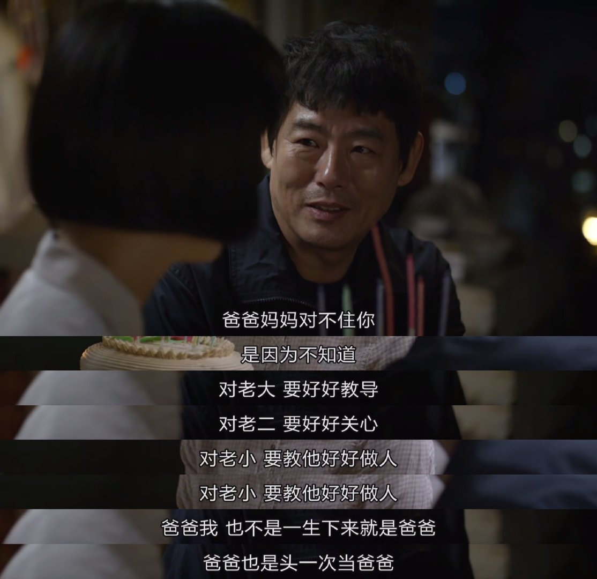

几周前的一个周会上，我提出让大家每人分享一个自己推荐的书影剧，当时一起旁听会议的HR小姐姐推荐了一个美剧，叫「我们的一天（This Is Us）」，她说非常感人，另外一个男同事也随声附和，并说非常适合我这种有两个小孩的人去看，他自己看的时候哭的不要不要的。
周末的时候我看了4集这个剧，情节围绕着同一个家庭中同一天出生的兄妹三人来展开，其中一个黑人不是他们的亲兄弟。剧中将他们小时候和他们成人后的场景相结合，故事情节很好，有多条平行的故事线，结尾经常有悬疑可以解开，比如第一集中三个主角是分别拍摄的，但在最后一刻才揭晓他们三个原来是一家人。
但实话实说，目前来说这个剧还没有让我掉过泪，相比较而言「请回答1988」是能让我在地铁上哭出来的一部剧。我想这和我所在的文化环境与这两部剧所使用的感人手段不同有关。
亚洲人，尤其是中国人都比较内敛、隐忍，更喜欢默默的付出，有话不说出来，不太在公众场合宣泄自己的情绪，在「1988」这部剧中让我奔泪的也是这样的场景。
举两个例子，德善生日那一集爸爸最后说的几句话：
爸爸我也不是一生下来就是爸爸，
爸爸也是头一次当爸爸，
所以我的女儿稍微体谅一下。

另一个是德善奶奶去世，爸爸一天都嘻嘻哈哈招待来悼念的朋友，直到晚上远在海外的大哥回来，兄弟姐妹到齐了，屋里也只剩下了一家人，爸爸再也抑制不住自己的情绪兄弟几人抱头痛哭。
但「我们的一天」使用的手法就很直给，在公共场合表达爱、有了问题及时沟通，父母与孩子之间的关系平等交流。不过这也许并不是这部剧没有让我掉泪的原因，这部剧我也只看了4集，还不能这么早下定论，只是基于这几集记录下自己的想法。也许看过后边的部分后会有不同的结论。所谓生长不就是在不断推翻自己曾深信不疑的想法的过程吗？
写到最后，我想我没有被「我们的一天」所触动，更大的可能是「1988」更贴近于我的生活，里边的一些场景都是我有体会或者曾经经历过的。